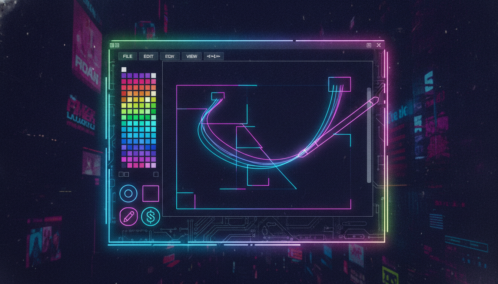

Малювання, пензлі, ластик, збереження

public ref class PaintForm : public Form {
private:
Panel^ canvas;
Bitmap^ bitmap;
Graphics^ canvasGraphics;
bool isDrawing = false;
Point lastPoint;
Color currentColor = Color::White;
int brushSize = 3;
String^ currentTool = "Pencil"; // Pencil, Brush, Eraser, Line, Rect, Ellipse
Point shapeStart;
public:
PaintForm() {
this->Text = "Графічний редактор";
this->Size = Size(900, 650);
// Панель інструментів
FlowLayoutPanel^ toolbar = gcnew FlowLayoutPanel();
toolbar->Dock = DockStyle::Top;
toolbar->Height = 50;
toolbar->BackColor = Color::FromArgb(40, 40, 60);
// Кнопки інструментів
array<String^>^ tools = {"Pencil", "Brush", "Eraser", "Line", "Rect", "Ellipse"};
for each(String^ tool in tools) {
Button^ btn = gcnew Button();
btn->Text = tool;
btn->Width = 70;
btn->Click += gcnew EventHandler(
this, &PaintForm::OnToolSelect);
toolbar->Controls->Add(btn);
}
// Кнопки кольорів
array<Color> colors = {Color::Black, Color::Red, Color::Green,
Color::Blue, Color::Yellow, Color::White, Color::Cyan, Color::Magenta};
for each(Color c in colors) {
Button^ btn = gcnew Button();
btn->Width = 30; btn->Height = 30;
btn->BackColor = c;
btn->Click += gcnew EventHandler(
this, &PaintForm::OnColorSelect);
toolbar->Controls->Add(btn);
}
// Розмір пензля
NumericUpDown^ nudSize = gcnew NumericUpDown();
nudSize->Minimum = 1; nudSize->Maximum = 50; nudSize->Value = 3;
nudSize->ValueChanged += gcnew EventHandler(
this, &PaintForm::OnSizeChanged);
toolbar->Controls->Add(gcnew Label(){Text = "Розмір:"});
toolbar->Controls->Add(nudSize);
this->Controls->Add(toolbar);
// Полотно
canvas = gcnew Panel();
canvas->Dock = DockStyle::Fill;
canvas->BackColor = Color::White;
bitmap = gcnew Bitmap(800, 500);
canvasGraphics = Graphics::FromImage(bitmap);
canvasGraphics->Clear(Color::White);
canvas->Paint += gcnew PaintEventHandler(
this, &PaintForm::OnCanvasPaint);
canvas->MouseDown += gcnew MouseEventHandler(
this, &PaintForm::OnMouseDown);
canvas->MouseMove += gcnew MouseEventHandler(
this, &PaintForm::OnMouseMove);
canvas->MouseUp += gcnew MouseEventHandler(
this, &PaintForm::OnMouseUp);
this->Controls->Add(canvas);
}
void OnCanvasPaint(Object^ s, PaintEventArgs^ e) {
e->Graphics->DrawImage(bitmap, 0, 0);
}
void OnMouseDown(Object^ s, MouseEventArgs^ e) {
isDrawing = true;
lastPoint = Point(e->X, e->Y);
shapeStart = Point(e->X, e->Y);
}
void OnMouseMove(Object^ s, MouseEventArgs^ e) {
if (!isDrawing) return;
Pen^ pen = gcnew Pen(currentColor, brushSize);
pen->StartCap = Drawing2D::LineCap::Round;
pen->EndCap = Drawing2D::LineCap::Round;
if (currentTool == "Pencil" || currentTool == "Brush") {
canvasGraphics->DrawLine(pen, lastPoint, Point(e->X, e->Y));
lastPoint = Point(e->X, e->Y);
canvas->Invalidate();
}
else if (currentTool == "Eraser") {
Pen^ erasePen = gcnew Pen(Color::White, brushSize * 2);
erasePen->StartCap = Drawing2D::LineCap::Round;
erasePen->EndCap = Drawing2D::LineCap::Round;
canvasGraphics->DrawLine(erasePen, lastPoint, Point(e->X, e->Y));
lastPoint = Point(e->X, e->Y);
canvas->Invalidate();
}
delete pen;
}
void OnMouseUp(Object^ s, MouseEventArgs^ e) {
if (!isDrawing) return;
isDrawing = false;
Pen^ pen = gcnew Pen(currentColor, brushSize);
Point end = Point(e->X, e->Y);
if (currentTool == "Line") {
canvasGraphics->DrawLine(pen, shapeStart, end);
}
else if (currentTool == "Rect") {
int x = Math::Min(shapeStart.X, end.X);
int y = Math::Min(shapeStart.Y, end.Y);
int w = Math::Abs(end.X - shapeStart.X);
int h = Math::Abs(end.Y - shapeStart.Y);
canvasGraphics->DrawRectangle(pen, x, y, w, h);
}
else if (currentTool == "Ellipse") {
int x = Math::Min(shapeStart.X, end.X);
int y = Math::Min(shapeStart.Y, end.Y);
int w = Math::Abs(end.X - shapeStart.X);
int h = Math::Abs(end.Y - shapeStart.Y);
canvasGraphics->DrawEllipse(pen, x, y, w, h);
}
canvas->Invalidate();
delete pen;
}
void OnToolSelect(Object^ s, EventArgs^ e) {
currentTool = ((Button^)s)->Text;
}
void OnColorSelect(Object^ s, EventArgs^ e) {
currentColor = ((Button^)s)->BackColor;
}
void OnSizeChanged(Object^ s, EventArgs^ e) {
brushSize = (int)((NumericUpDown^)s)->Value;
}
};